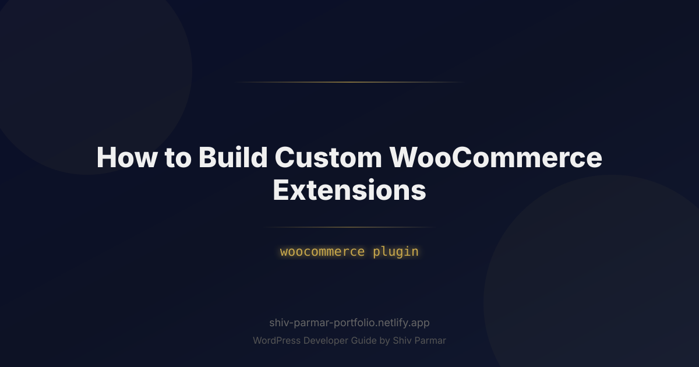

How to Build Custom WooCommerce Extensions
Table of Contents
With WooCommerce powering over 3.9 million active digital storefronts across the globe, it stands as the undisputed champion of open-source e-commerce platforms. Built on top of WordPress, its open architecture gives developers complete freedom to build tailored shopping experiences. However, as e-commerce businesses scale, standard off-the-shelf plugins often fall short. Generic solutions bring unwanted code bloat, plugin conflicts, security vulnerabilities, and performance bottlenecks that slow down your store and damage conversion rates.
That is where custom WooCommerce plugin development becomes essential. Building a bespoke WooCommerce extension allows you to engineer exact features—ranging from custom payment gateways and complex product configurators to deep Enterprise Resource Planning (ERP) integrations and tailored checkout flows—without sacrificing site speed or security. By writing clean, modular code, you gain absolute control over your store's architecture while leveraging the robust backend infrastructure of WordPress.
In this comprehensive guide, we will walk step-by-step through the process of building a modern, high-performance custom WooCommerce extension. You will learn how to initialize a enterprise-ready plugin, hook into core WooCommerce APIs, declare High-Performance Order Storage (HPOS) compatibility, build custom REST API endpoints, and adhere to strict coding standards.
What is Custom WooCommerce Extension Development?
At its core, a WooCommerce extension is a specialized WordPress plugin designed to extend or modify the functionalities of WooCommerce. While standard WordPress plugins interact primarily with core WordPress APIs (such as post types, taxonomies, and user roles), WooCommerce extensions interface directly with specialized WooCommerce classes, database structures, lifecycle hooks, and object-oriented data stores like WC_Product, WC_Order, and WC_Customer.
Developing a custom WooCommerce extension involves writing code using Object-Oriented PHP, JavaScript (often modern React for Gutenberg Checkout Blocks), and SQL standards. Instead of altering core WooCommerce files—which breaks store update paths and creates severe security risks—extensions use WooCommerce’s extensive action and filter hook system to inject custom logic smoothly into the application lifecycle.
Store owners and developers generally face three choices when adding custom functionality: modifying the active theme's functions.php file, installing a third-party commercial plugin, or developing a custom WooCommerce plugin. The table below illustrates why building a custom extension is the superior choice for scalable architecture:
| Feature / Parameter | Theme functions.php | Third-Party Plugin | Custom WooCommerce Extension |
|---|---|---|---|
| Portability | Low (Lost upon theme switch) | High (Independent of theme) | High (Independent of theme) |
| Performance Impact | Moderate (Can bloat theme execution) | Variable (Often includes unnecessary code) | Optimal (Contains only required logic) |
| Maintainability | Poor (Becomes unorganized quickly) | Dependent on third-party developers | Excellent (Full developer control) |
| Security Control | Limited structure | Requires third-party trust | Complete auditability |
| HPOS Compatibility | Manual implementation needed | Depends on vendor updates | Built-in to custom specification |
Why Custom WooCommerce Extensions Matter in 2026
The WooCommerce ecosystem has undergone significant architectural shifts. Modern WooCommerce development demands modern paradigms. Building custom plugins today isn't just about tweaking design; it’s about aligning with modern software architectures:
- High-Performance Order Storage (HPOS): WooCommerce moved away from using the legacy
wp_postsandwp_postmetatables for order data, introducing dedicated, optimized database tables for orders. Extensions built today must explicitly support HPOS to deliver fast query performance and scale past millions of orders. - Gutenberg & Checkout Block Integration: Legacy WooCommerce shortcodes (
[woocommerce_checkout]) are continuously phased out in favor of React-driven Checkout Blocks. Custom extensions must hook into modern Block APIs to extend checkout fields effectively. - Headless and Hybrid Architectures: Modern enterprise stores decouple their frontend using Next.js or React, connecting to WordPress via the WooCommerce REST API and Store API. Building modern extensions means exposing custom database fields through API routes cleanly.
- PHP 8.2+ Type Safety & OOP Standards: Modern plugin development uses strong typing, strict typing declarations, interfaces, and dependency injection, eliminating runtime bugs and improving overall maintainability.
Step-by-Step Guide to Building a Custom WooCommerce Extension
In this practical tutorial, we will build a production-ready custom WooCommerce extension called "WooCommerce Custom Product Note & Delivery Scheduler". This plugin allows shoppers to add a custom engraving note and select a requested delivery date directly on the single product page, saves that data directly to the cart and order, and displays it inside the admin dashboard and REST API responses.
Step 1: Setting Up Your Development Environment & Plugin File Architecture
Before writing PHP code, establish a proper local WordPress development environment using tools like Local, DDEV, or Docker. Ensure you have PHP 8.2 or higher, WordPress 6.x+, and WooCommerce 8.x+ installed. Open your wp-config.php file and enable debugging modes:
define( 'WP_DEBUG', true );
define( 'WP_DEBUG_LOG', true );
define( 'WP_DEBUG_DISPLAY', false );
@ini_set( 'display_errors', 0 );
Navigate to your WordPress installation's wp-content/plugins/ directory and create a new directory named wc-custom-product-note. Inside this folder, create the main plugin file: wc-custom-product-note.php.
Open wc-custom-product-note.php and add the standard WordPress plugin header block:
<?php
/**
* Plugin Name: WooCommerce Custom Product Note & Scheduler
* Plugin URI: https://example.com/plugins/wc-custom-product-note
* Description: Adds custom product engraving options and custom order metadata to WooCommerce.
* Version: 1.0.0
* Author: Your Name
* Author URI: https://example.com
* Text Domain: wc-custom-note
* Domain Path: /languages
* Requires at least: 6.4
* Requires PHP: 8.2
* WC requires at least: 8.5
* WC tests up to: 9.x
*/
if ( ! defined( 'ABSPATH' ) ) {
exit; // Exit if accessed directly.
}
Step 2: Checking WooCommerce Dependency and Initializing the Class
A fatal error will occur if your extension runs WooCommerce-specific functions while WooCommerce is disabled. We must verify that WooCommerce is active before loading our extension's core architecture.
Add the following object-oriented structural code directly below your header block:
final class WC_Custom_Product_Note {
/**
* Plugin Version
*/
public const VERSION = '1.0.0';
/**
* Instance variable for Singleton pattern
*/
private static $instance = null;
/**
* Get instance of class.
*/
public static function get_instance() {
if ( is_null( self::$instance ) ) {
self::$instance = new self();
}
return self::$instance;
}
/**
* Constructor.
*/
private function __construct() {
$this->init();
}
/**
* Initialize plugin hooks.
*/
private function init() {
// Load text domain for translations
add_action( 'plugins_loaded', array( $this, 'load_textdomain' ) );
// Hooks for custom functional features
add_action( 'woocommerce_before_add_to_cart_button', array( $this, 'display_custom_product_field' ) );
add_filter( 'woocommerce_add_cart_item_data', array( $this, 'add_cart_item_data' ), 10, 3 );
add_filter( 'woocommerce_get_item_data', array( $this, 'display_cart_item_data' ), 10, 2 );
add_action( 'woocommerce_checkout_create_order_line_item', array( $this, 'save_custom_data_to_order_items' ), 10, 4 );
}
/**
* Load Internationalization textdomain
*/
public function load_textdomain() {
load_plugin_textdomain( 'wc-custom-note', false, dirname( plugin_basename( __FILE__ ) ) . '/languages' );
}
}
/**
* Ensures WooCommerce is active before instantiating the main plugin class.
*/
function run_wc_custom_product_note() {
// Check if WooCommerce class exists
if ( class_exists( 'WooCommerce' ) ) {
WC_Custom_Product_Note::get_instance();
}
}
add_action( 'plugins_loaded', 'run_wc_custom_product_note' );
Step 3: Declaring High-Performance Order Storage (HPOS) Compatibility
High-Performance Order Storage (HPOS) utilizes separate custom database tables (like wp_wc_orders) to deliver significant query performance upgrades over traditional post tables. Modern extensions must explicitly declare compatibility with HPOS using the before_woocommerce_init action hook.
Add this declaration method outside or inside your primary initialization bootstrap routine:
add_action( 'before_woocommerce_init', function() {
if ( class_exists( \Automattic\WooCommerce\Utilities\FeaturesUtil::class ) ) {
\Automattic\WooCommerce\Utilities\FeaturesUtil::declare_compatibility(
'custom_order_tables',
__FILE__,
true
);
}
} );
Failing to include this code will result in WooCommerce displaying a warning to store administrators stating that your woocommerce plugin is incompatible with modern order storage settings.
Step 4: Utilizing WooCommerce Action and Filter Hooks
WooCommerce runs on a rich framework of hooks. Action hooks let you insert custom content or functionality at specific code execution points, while filter hooks let you intercept and modify data before it is rendered or stored in the database.
Let's build out the functional code inside our main class to display an input field on the single product page, validate the input, save it to the shopping cart, and permanently write it into order records.
Add these methods inside your WC_Custom_Product_Note class scope:
/**
* 1. Render Custom Input Field on Single Product Page
*/
public function display_custom_product_field() {
global $product;
if ( ! $product || ! $product->is_purchasable() ) {
return;
}
// Security Nonce
wp_nonce_field( 'save_custom_note_action', 'custom_note_nonce' );
?>
<div class="wc-custom-engraving-field" style="margin-bottom: 15px;">
<label for="wc_custom_engraving_text" style="display:block; font-weight:bold; margin-bottom: 5px;">
<?php esc_html_e( 'Custom Engraving Note (Optional):', 'wc-custom-note' ); ?>
</label>
<input type="text"
id="wc_custom_engraving_text"
name="wc_custom_engraving_text"
class="input-text widefat"
maxlength="100"
placeholder="e.g. Happy Birthday John!" />
</div>
<?php
}
/**
* 2. Capture and Add Custom Field Data to Cart Item
*/
public function add_cart_item_data( $cart_item_data, $product_id, $variation_id ) {
if ( isset( $_POST['wc_custom_engraving_text'] ) && isset( $_POST['custom_note_nonce'] ) ) {
// Verify Nonce for security
if ( wp_verify_nonce( sanitize_text_field( wp_unslash( $_POST['custom_note_nonce'] ) ), 'save_custom_note_action' ) ) {
$sanitized_note = sanitize_text_field( wp_unslash( $_POST['wc_custom_engraving_text'] ) );
if ( ! empty( $sanitized_note ) ) {
$cart_item_data['wc_custom_engraving'] = $sanitized_note;
}
}
}
return $cart_item_data;
}
/**
* 3. Display Custom Field Data in Cart and Checkout Summary Pages
*/
public function display_cart_item_data( $item_data, $cart_item ) {
if ( isset( $cart_item['wc_custom_engraving'] ) ) {
$item_data[] = array(
'key' => __( 'Custom Engraving', 'wc-custom-note' ),
'value' => wc_clean( $cart_item['wc_custom_engraving'] ),
'display' => '',
);
}
return $item_data;
}
/**
* 4. Save Custom Cart Metadata into Order Line Items (HPOS Compatible)
*/
public function save_custom_data_to_order_items( $item, $cart_item_key, $values, $order ) {
if ( isset( $values['wc_custom_engraving'] ) ) {
$item->add_meta_data(
__( 'Custom Engraving', 'wc-custom-note' ),
$values['wc_custom_engraving'],
true
);
}
}
Step 5: Adding a Custom Settings Tab in WooCommerce Administration
Store owners often need back-end controls to configure custom extensions. WooCommerce provides built-in settings infrastructure allowing developers to append custom tabs inside WooCommerce > Settings using native APIs.
Here is how to append a dedicated configuration tab using the woocommerce_settings_tabs_array and woocommerce_sections_ hooks:
/**
* Register Custom Tab in WooCommerce Settings Dashboard
*/
add_filter( 'woocommerce_settings_tabs_array', 'add_custom_extension_settings_tab', 50 );
function add_custom_extension_settings_tab( $settings_tabs ) {
$settings_tabs['custom_note_tab'] = __( 'Engraving Options', 'wc-custom-note' );
return $settings_tabs;
}
/**
* Render Settings Fields inside Custom Tab
*/
add_action( 'woocommerce_settings_tabs_custom_note_tab', 'render_custom_tab_settings' );
function render_custom_tab_settings() {
woocommerce_admin_fields( get_custom_extension_settings() );
}
/**
* Save Settings Values upon submission
*/
add_action( 'woocommerce_update_options_custom_note_tab', 'save_custom_tab_settings' );
function save_custom_tab_settings() {
woocommerce_update_options( get_custom_extension_settings() );
}
/**
* Define Setting Array Configurations
*/
function get_custom_extension_settings() {
return array(
'section_title' => array(
'name' => __( 'Engraving Feature Configurations', 'wc-custom-note' ),
'type' => 'title',
'desc' => __( 'Configure default settings for global custom text options.', 'wc-custom-note' ),
'id' => 'wc_custom_note_section_title'
),
'max_char_limit' => array(
'name' => __( 'Max Character Count', 'wc-custom-note' ),
'type' => 'number',
'desc' => __( 'Specify maximum characters allowed in engraving fields.', 'wc-custom-note' ),
'id' => 'wc_custom_note_max_char',
'css' => 'width:100px;',
'default' => '100',
),
'section_end' => array(
'type' => 'sectionend',
'id' => 'wc_custom_note_section_end'
)
);
}
Step 6: Extending WooCommerce REST API with Custom Endpoints
Modern headless applications, mobile apps, and third-party fulfillment services often read order information over API interfaces. You can expose custom order or product fields by registering endpoints via WordPress REST API controllers or extending WooCommerce core REST schemas.
Below is how to register a secure, high-performance REST API route (/wp-json/wc-custom/v1/order-notes/(?P<id>\d+)) to fetch custom metadata associated with specific WooCommerce orders:
add_action( 'rest_api_init', function () {
register_rest_route( 'wc-custom/v1', '/order-notes/(?P<id>\d+)', array(
'methods' => 'GET',
'callback' => 'get_custom_order_item_notes',
'permission_callback' => function () {
return current_user_can( 'edit_shop_orders' );
},
'args' => array(
'id' => array(
'validate_callback' => function( $param ) {
return is_numeric( $param );
}
),
),
) );
} );
/**
* REST API Controller Callback
*/
function get_custom_order_item_notes( $request ) {
$order_id = (int) $request['id'];
// Utilize WooCommerce native CRUD helper (HPOS safe)
$order = wc_get_order( $order_id );
if ( ! $order ) {
return new WP_Error( 'no_order_found', __( 'Order not found', 'wc-custom-note' ), array( 'status' => 404 ) );
}
$notes = array();
foreach ( $order->get_items() as $item_id => $item ) {
$engraving = $item->get_meta( __( 'Custom Engraving', 'wc-custom-note' ) );
if ( ! empty( $engraving ) ) {
$notes[] = array(
'item_id' => $item_id,
'product' => $item->get_name(),
'engraving' => $engraving,
);
}
}
return rest_ensure_response( array(
'order_id' => $order_id,
'notes' => $notes,
) );
}
Best Practices for WooCommerce Plugin Development
Developing high-performance, robust extensions for WooCommerce requires strict adherence to enterprise software architecture principles. Below are essential standards every WordPress developer must apply when building custom extensions.
1. Always Use Native WooCommerce CRUD Methods
Never run direct SQL queries via $wpdb or direct postmeta calls like get_post_meta() to interact with WooCommerce products, orders, or coupons. WooCommerce utilizes internal Data Stores (CRUD pattern).
Using native object methods ensures full compatibility across HPOS engines, object caching setups, and core updates:
// INCORRECT (Breaks under HPOS and Object Caching setups)
$order_date = get_post_meta( $order_id, '_paid_date', true );
// CORRECT (Native WooCommerce CRUD methods)
$order = wc_get_order( $order_id );
if ( $order ) {
$payment_date = $order->get_date_paid();
$order->update_meta_data( '_custom_tracking_id', 'TRK123456' );
$order->save(); // Persists updates safely to DB
}
2. Rigorous Data Sanitization, Escaping, and Security Checks
Security flaws endanger sensitive payment data, customer personally identifiable information (PII), and backend access. Always enforce three distinct layers of security defense:
- Nonces (Number Used Once): Validate requests to verify intent and guard against Cross-Site Request Forgery (CSRF) via
wp_verify_nonce()orcheck_admin_referral(). - Input Sanitization: Sanitize incoming inputs before processing using methods like
sanitize_text_field(),sanitize_email(), orabsint(). - Output Escaping: Escape all variables immediately before rendering them into HTML output using
esc_html(),esc_attr(), oresc_url().
3. Namespace Your Code to Prevent Global Variable Pollution
Avoid executing code in global function spaces. Function names like add_custom_scripts() or classes like class Checkout will cause immediate fatal errors if another plugin declares the same identifiers. Always use PHP Namespaces (e.g., namespace MyCompany\WooCommerce\Extension) or unique class names to isolate your logic.
4. Keep Business Logic Separate from Presentation Views
Follow a Model-View-Controller (MVC) approach. Store template rendering logic in separate view files within a /templates/ directory inside your plugin folder, allowing developers to override template displays cleanly via standard theme overrides.
Common Mistakes to Avoid in Custom WooCommerce Extensions
Even seasoned WordPress engineers can fall into traps when writing specialized woocommerce plugin code. Avoiding these structural pitfalls will save dozens of hours in maintenance and debugging down the line:
- Executing Logic Prior to the
plugins_loadedHook: Attempting to call WooCommerce functions likeWC()orwc_get_product()before all plugins load completely will trigger fatal execution errors. Always defer initialization toplugins_loadedor later. - Ignoring High-Performance Order Storage (HPOS) Schema: Writing code that directly reads or writes to
wp_postsorwp_postmetabypasses HPOS database structures, resulting in data desynchronization and administrative site crashes. - Hardcoding Database Table Prefixes or Currencies: Never hardcode SQL queries with
wp_prefixes or assume global currency symbols ($). Use$wpdb->prefixfor custom queries andget_woocommerce_currency_symbol()for currency formatting. - Leaving Temporary Data Behind Upon Uninstallation: A well-written WooCommerce extension cleans up database tables, transient cache items, and custom option settings via a dedicated
uninstall.phpscript when deleted by site managers. - Neglecting Translation Preparedness (i18n): Omitting textdomains or failing to wrap strings in internationalization wrappers like
__()or_e()prevents international store managers from localizing your custom extension.
Conclusion
Building a custom woocommerce plugin is one of the most effective ways to tailor an online store to your exact business needs. While off-the-shelf solutions offer a solid foundation, custom development allows you to streamline operations, integrate unique third-party services, and deliver a truly bespoke shopping experience. By understanding the core hooks, actions, and coding standards of WooCommerce, you can extend your WordPress site far beyond its default capabilities and drive sustainable growth.
As you embark on your development journey, always prioritize code maintainability, security, and performance. Following official WordPress best practices and testing your custom code thoroughly in a staging environment ensures your store remains fast, reliable, and secure as it scales. With the right approach, custom extensions give you complete control over your e-commerce ecosystem.
Need expert assistance bringing your unique store vision to life? If you prefer to focus on running your business while a seasoned professional handles the code, Shiv Parmar is available for custom WordPress and e-commerce development work worldwide. From complex woocommerce plugin creation to tailored backend integrations, reach out today to elevate your online store.